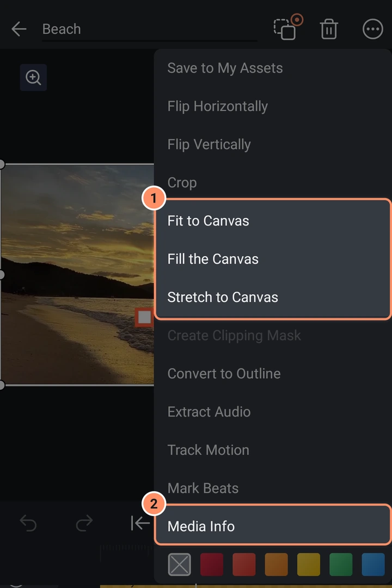
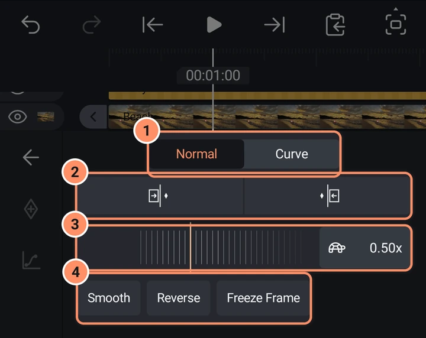
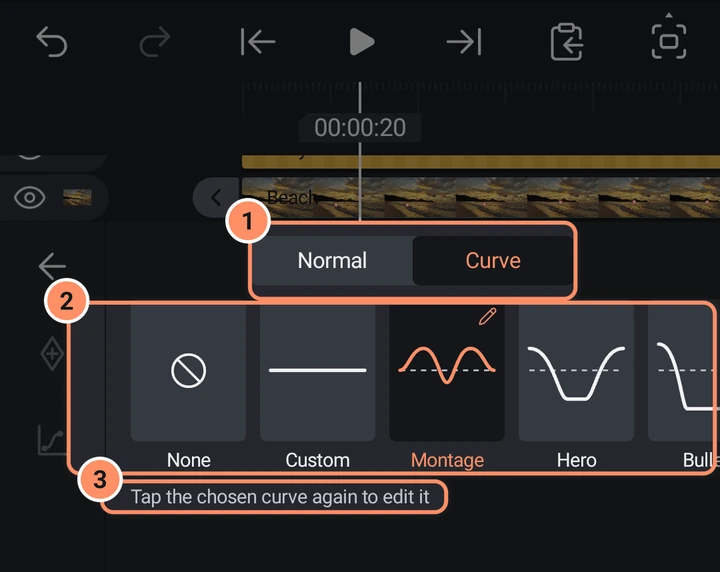
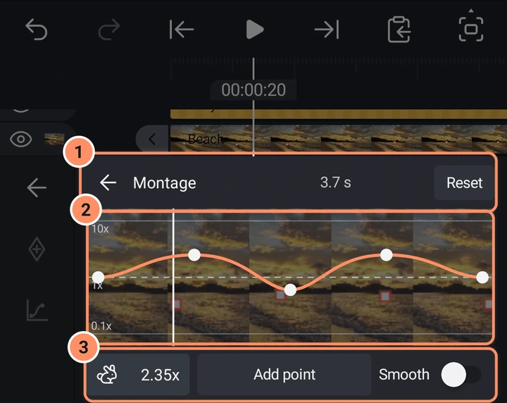
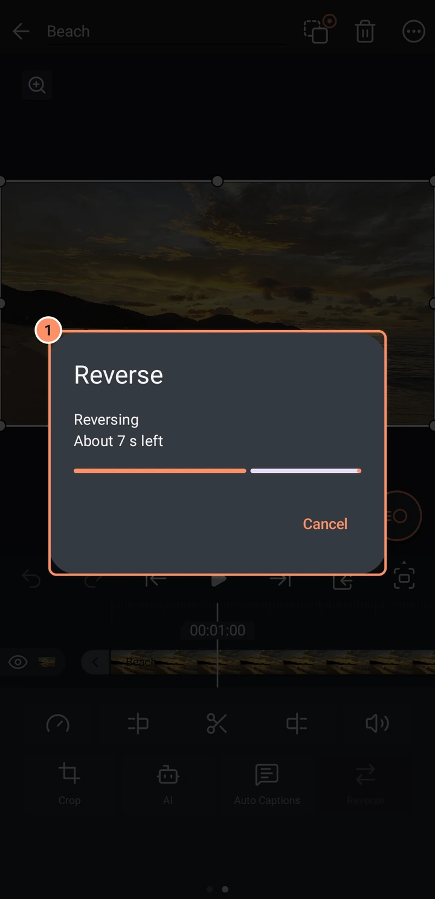
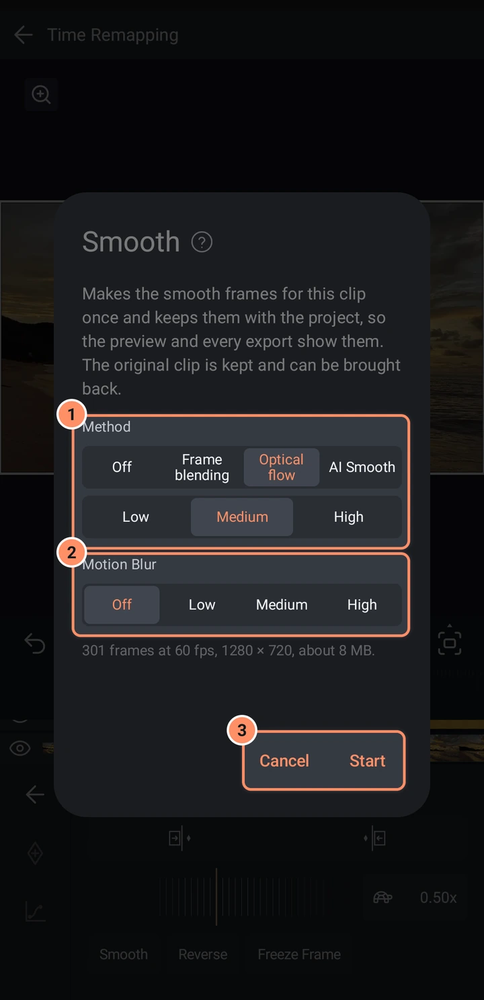

Foto's, video en snelheid
Voeg foto's en video's toe, pas de snelheid aan met een liniaal of een curve, keer een clip om, bevries een beeld en houd grote video's soepel.
Op deze pagina
Foto's en video's toevoegen
Open het tabblad Media van het menu Toevoegen en tik op een foto of video. Die wordt op de afspeelkop toegevoegd en zo geschaald dat hij in het canvas past, met de draaiing van het bestand. Een video duurt net zo lang als het bestand. Met Camera op hetzelfde tabblad kun je ook iets nieuws opnemen.
Foto's en video's zijn rechthoeken met een afbeelding als vulling, dus alle vormtools werken erop: Transformeren, Rand en schaduw, Dekking, effecten enzovoort.
Standaard bewaart de app een kopie van toegevoegde media in het project (de instelling Kopie van geïmporteerde media in het project bewaren). Bij bestanden groter dan 32 MB zie je "... wordt naar het project gekopieerd..." zolang het kopiëren duurt. Is er niet genoeg vrije ruimte, dan blijft het project het originele bestand gebruiken.
Wil je een afbeelding in het canvas laten passen, gebruik dan het laagmenu: Aan canvas aanpassen toont de hele afbeelding, Canvas vullen bedekt het canvas en snijdt de randen af, Uitrekken tot canvas vervormt de afbeelding zodat hij precies past. Zie Laagmenu's en meerdere lagen selecteren.

Media-info en een bestand vervangen
Media-info in het laagmenu toont de naam, afmetingen, framesnelheid, duur, indeling en grootte van het bestand. Mediabestand vervangen opent de fotokiezer en vervangt dat bestand in elke laag van het project die het gebruikt. Zo herstel je een laag waarvan het bestand kwijt is.
Snelheid
Selecteer een video- of geluidsclip en tik op Snelheid (de eerste kleine knop van het toolraster). Het paneel Tijdremap opent. Bovenaan staan tabbladen: Normaal, Curve en, voor video's, Tijdremap. Het opent op Curve als de clip al een snelheidscurve heeft, en op Tijdremap als Tijdremap aan staat.
Normaal
- De knoppen bovenaan zetten het begin of het einde van de clip op de afspeelkop, zonder de video bij te snijden: de snelheid verandert zodat hetzelfde stuk video in de nieuwe lengte past. Je ziet alleen de knoppen die passen bij waar de afspeelkop staat: Begin verlengen tot de afspeelkop vóór de clip, Begin bijsnijden en Einde bijsnijden erin, Einde verlengen tot de afspeelkop erna.
- De liniaal stelt één snelheid in voor de hele clip, van 0,05x tot 100x. Sleep hem zijwaarts; bij 1x klikt hij vast.
- Het vak naast de liniaal toont de snelheid en een plaatje dat meeverandert: een slak, een schildpad, een wandelaar, een konijn, een paard en, helemaal bovenaan, een jachtluipaard. Dubbeltik op het vak om een exacte waarde te typen.
- Onder de liniaal staan de chips Vloeiend, Omkeren en Beeld bevriezen. Die worden hieronder uitgelegd.

Heeft de clip een curve, dan toont de liniaal de gemiddelde snelheid. Pas je die aan, dan wordt de hele curve sneller of langzamer en blijft de vorm hetzelfde.
Het geluid van een clip volgt de snelheid, dus ook de toonhoogte verandert mee.
Curve
Met het tabblad Curve verander je de snelheid in de loop van de tijd, bijvoorbeeld om alleen het mooiste moment te vertragen. Een rij tegels schuift zijwaarts. Tik op een tegel om hem op de hele clip toe te passen.
| Tegel | Wat hij doet |
|---|---|
| Geen | Haalt de curve weg: de clip speelt weer op een constante 1x |
| Aangepast | Een vlakke curve op 1x die je zelf vormgeeft; de editor opent meteen |
| Montage | 1x, 2,5x, 0,6x, 2,5x, 1x |
| Held | Snel aan beide kanten, langzaam (0,3x) in het midden |
| Kogel | Nog sneller aan beide kanten (3x), heel langzaam (0,2x) in het midden |
| Jump cut | 1x, met een piek naar 4x in het midden |
| Flits in | Begint op 4x en gaat geleidelijk naar 1x |
| Flits uit | Blijft op 1x en versnelt aan het einde naar 4x |

Tik nog een keer op de gekozen tegel om de curve te bewerken. De editor toont de beelden van de clip met de curve eroverheen, tussen 0,1x en 10x, met een stippellijn op 1x.
- Een punt verplaatsen. Raak een punt aan en sleep het. Omhoog en omlaag verandert de snelheid; bij 1x klikt die vast met een klein tikje. Zijwaarts verandert de plek in de clip. Tik of sleep je op een leeg deel van de grafiek, dan verplaats je in plaats daarvan de afspeelkop door de clip.
- Punt toevoegen zet een nieuw punt op de afspeelkop, tot tien in totaal. Is er een punt geselecteerd, dan wordt de knop Punt verwijderen; het eerste en het laatste punt kun je niet verwijderen.
- Het vak linksonder toont de snelheid van het geselecteerde punt, of de snelheid op de afspeelkop als er geen punt geselecteerd is. Dubbeltik erop om een waarde te typen.
- In het midden van de bovenste balk staat de lengte van de clip. Tijdens het slepen zie je de oude en de nieuwe lengte, bijvoorbeeld "3,7 s → 4,2 s", en de wijziging wordt toegepast als je loslaat.
- Resetten zet de curve terug zoals je hem opende (een vlakke 1x voor Aangepast). Met de pijl linksboven sluit je de editor.
- Vloeiend is hier een schakelaar: die doet hetzelfde als de chip Vloeiend.

Tijdremap
Met Tijdremap kies je welk moment van de video op elk punt van de laag te zien is. Tik op Tijdremap aanzetten: de clip speelt gewoon verder zoals eerst, met een keyframe aan het begin en aan het einde. Cliptijd is het moment van de video onder de afspeelkop; sleep de liniaal of dubbeltik op het getal om het te veranderen, en met de keyframeknop links zet je daar een keyframe. Keyframes die oplopen spelen de clip vooruit af, twee keer dezelfde waarde bevriest hem, en keyframes die aflopen spelen hem achterstevoren af. Easing tussen keyframes werkt net als bij elke andere instelling.
- Omkeren draait de keyframes om, zodat de clip achterstevoren speelt.
- Uitzetten haalt Tijdremap weg; de snelheid van Normaal of Curve komt terug.
Het geluid van de clip is gedempt zolang Tijdremap aan staat.
Omkeren
Omkeren speelt een videoclip achterstevoren af, beeld en geluid. De app maakt een omgekeerde kopie van de clip, dus een lange clip duurt even: een venster toont Omkeren en de resterende tijd, en met Annuleren stop je. Bij een omgekeerde clip licht de chip oranje op; tik nog een keer op Omkeren om terug te gaan naar het origineel. Dezelfde knop staat op pagina 2 van het toolraster van de video. Heeft een clip Vloeiend of Verbeteren, dan moet je die eerst weghalen: de app zegt dan "Verwijder Vloeiend en Verbeteren uit deze clip voordat je hem omkeert".

Beeld bevriezen
Beeld bevriezen (als de afspeelkop in de clip staat) vraagt hoeveel Seconden je het beeld wilt vasthouden (0,1 tot 30) en houdt het beeld op de afspeelkop vast.
Grote video's en het voorbeeld
Een video groter dan 1920 x 1080, of een video met meer dan twee seconden tussen de interne sleutelbeelden, laat zich traag scrubben. Standaard maakt AbsentMotion op de achtergrond een kleinere kopie (een dunne lijn langs de balk toont de voortgang) en gebruikt die voor het voorbeeld en de miniaturen. Bij exporteren wordt altijd het originele bestand gelezen. Je kunt dit uitzetten of de kopieën wissen in Instellingen.
Het geluid uit een video halen
Audio extraheren in het laagmenu maakt een audiolaag van het geluid van de video en dempt de video. De nieuwe laag houdt de timing, snelheid, het volume en de audio-effecten van de video. Zie Audio.
De achtergrond verwijderen
Met de AI-tools kun je de achtergrond uit een foto of video knippen en ruis in een opname verminderen. Ze draaien op je telefoon. Zie AI-tools.
Een clip vloeiend maken
Vloeiend is de eerste chip onder de liniaal in het paneel Snelheid van een videoclip (en een schakelaar in de curve-editor). Het maakt één keer de tussenbeelden voor die clip en bewaart ze bij het project, zodat het voorbeeld en elke export de vloeiende versie tonen. Zo laat je slowmotion het mooist vloeiend lopen: een clip van 30 fps op halve snelheid krijgt nieuwe beelden tussen de echte, in plaats van elk beeld twee keer te tonen.
- Selecteer de videoclip en open Snelheid.
- Tik op Vloeiend, kies Frames mengen, Optische stroom of AI Vloeiend en een niveau (Laag, Medium, Hoog), en eventueel Bewegingsonscherpte. AI Vloeiend downloadt zijn model één keer en laat zien hoe lang het op deze telefoon ongeveer duurt (zie AI-tools).
- Wacht tot het klaar is. Je kunt altijd annuleren; dan verandert er niets.

De originele clip blijft bewaard: de clip toont een rij Vloeiend met een herstelknop die het origineel terugzet, en Ongedaan maken werkt ook. Opnieuw vloeiend maken begint altijd bij het origineel. Alleen het bijgesneden deel van de clip wordt verwerkt. Het geluid van de clip blijft zoals het is.
Vloeiendere beweging bij het exporteren
Hebben je videoclips een lagere framesnelheid dan je export, dan kan het exportscherm ook tussenbeelden en bewegingsonscherpte aan de hele video toevoegen. Zie Frame-interpolatie en Bewegingsonscherpte op de pagina Exporteren.